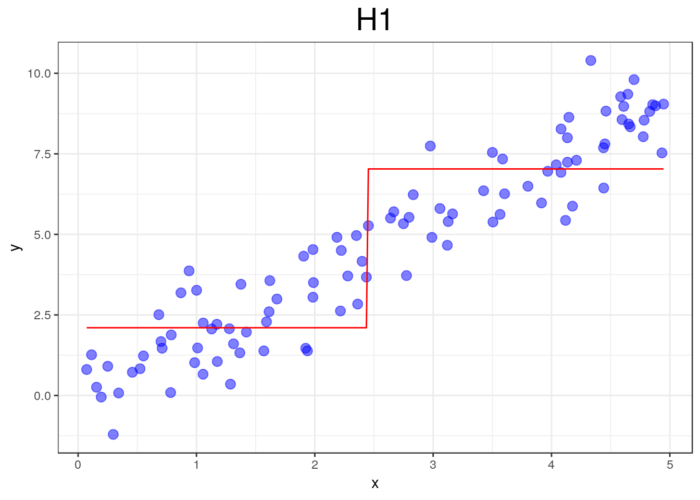

Algoritmos de Boosting
Victor Freguglia; Leonarcho Uchoa Pedreira
O Conceito de Boosting
- Combinar um grande número de preditores com baixo poder de predição para compor um bom preditor.
- Diferentemente de outros métodos similares, onde os preditores fracos combinados são criados de maneira independente, no Boosting os preditores de maneira a melhorar o desempenho em regiões com altas taxas de erro.
- Se pensarmos que cada preditor tem um “voto” na decisão final, o método nos fornece um comitê em que aqueles que tem grande convicção têm mais poder na decisão.
Visualização
Primeiras iterações



…


Gradient Boosting
Algoritmo
- \((y_i, x_i), i = 1,\dots, N\);
- \(L(\cdot, \cdot)\) - função perda;
- Inicie com o preditor constante \(H_0 = \arg \min_c \sum_{i = 1}^N L(y_i,c)\);
- Para \(m = 1, \dots, M\) faça:
- Calcular \[r_{im} = -\left[ \frac{\partial L(y_i, G(x_i))}{\partial }\right]_{G = H_{m-1}};\]
- Ajustar um novo preditor fraco \(h_m\) aos resíduos \((r_{im},x_i);\)
- Calcule o multiplicador \(\gamma_{m}\) como \[\gamma_m = \underset{\gamma}{\operatorname{arg\,min}} \sum_{i=1}^n L\left(y_i, H_{m-1}(x_i) + \gamma h_m(x_i)\right);\]
- Atualize o modelo: \[\displaystyle H_{m}(x)=H_{m-1}(x)+\gamma_m h_m(x);\]
- Defina o classificador final como \[G(x) = H_M(x).\]
Vantagens
- Garante, ao menos na amostra de treino, um desempenho melhor a cada passo.
- Funciona para Regressão e classificação com adaptação na função perda.
- Não requer nenhum tipo de pré-processamento.
Desvantagens
- Alto custo computacional;
- É possível (embora pouco provável) ocorrer overfitting;
- Não interpretável;
Tuning
Algumas variações do Gradient Boosting incluem:
- Sortear um subconjunto de tamanho \(N' < N\) da amostra de treino para o ajuste do preditor a cada passo.
- Encolher os preditores por algum valor \(\alpha < 1\), isto é, substituir o passo de atualização por \[\displaystyle H_{m}(x)=H_{m-1}(x)+\alpha \gamma_m h_m(x).\]
- Utilizar diferentes números de nós quando o preditor fraco utlizado é uma Árvore de Regressão e Classificação.
Implementação
Algumas das principais implementações do algoritmo de Gradient Boosting em R são:
- Pacote
gbm: Generalized Boosted Regression Models; - Pacote
xgboost: Extreme Gradient Boosting; - Plataforma
h2o: www.h2o.ai
Uma aplicação
Conjunto de dados MNIST

Resultados
- 60000 Imagens 28x28 pixels de dígitos escritos a mão.
- Classificação dos dígitos (10 categorias) utilizando os valores dos 784 pixels como covariáveis.
- Acurácia de 97.33% no conjunto de teste da competição no Kaggle, utilizando Gradient Boosting, com taxa de aprendizado \(\alpha = 0.08\), árvores com 7 nós nos classificadores e 600 passos de Boosting, sem nenhum tipo de pré-processamento.
- Implementação em
Rutilizando o frameworkh2oe resultados no Kaggle disponíveis no QR-code.

Conclusão
- Boosting produz classificadores muito eficiêntes;
- Apesar das variações incluirem diversos parâmetros, a variação deles, exceto para casos específicos, não tem grande efeito na qualidade final das predições; Por outro lado, podem reduzir o custo computacional ou alterar a quantidade necessária de passos até produzir um bom preditor;
- A forma com que o algoritmo é construído causa a impressão de que o overfitting deve ocorrer, mas a quantidade necessária de passos para que ele de fato ocorra é muito grande. A visualização exemplifica como os passos tendem a modificar cada vez menos o modelo.
- Por se tratar de modificações sequênciais de um único preditor, não é necessário guardar um grande número de modelos simutaneamente. Por outro lado, isso torna a paralelização mais complicada.
Referências
- Friedman, J. H. (2001), ‘Greedy function approximation: a gradient boosting machine’, Annals of statistics pp. 1189–1232.
- Friedman, J., Hastie, T. & Tibshirani, R. (2001), The elements of statistical learning, Vol. 1, Springer series in statistics New York, NY, USA:.
- Schapire, R. E. (1990), ‘The strenght of weak learnability’, Machine Learning 5, 197–227.